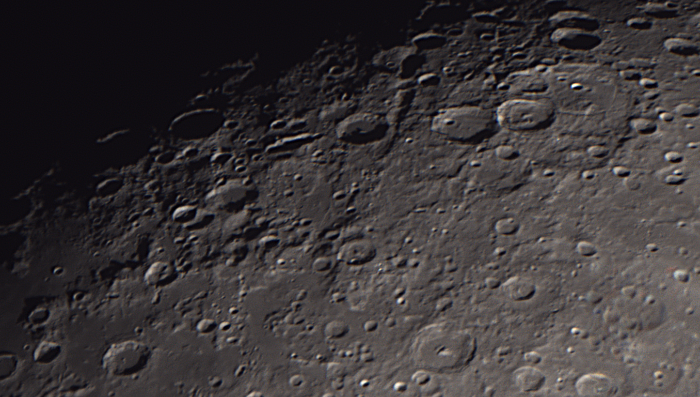
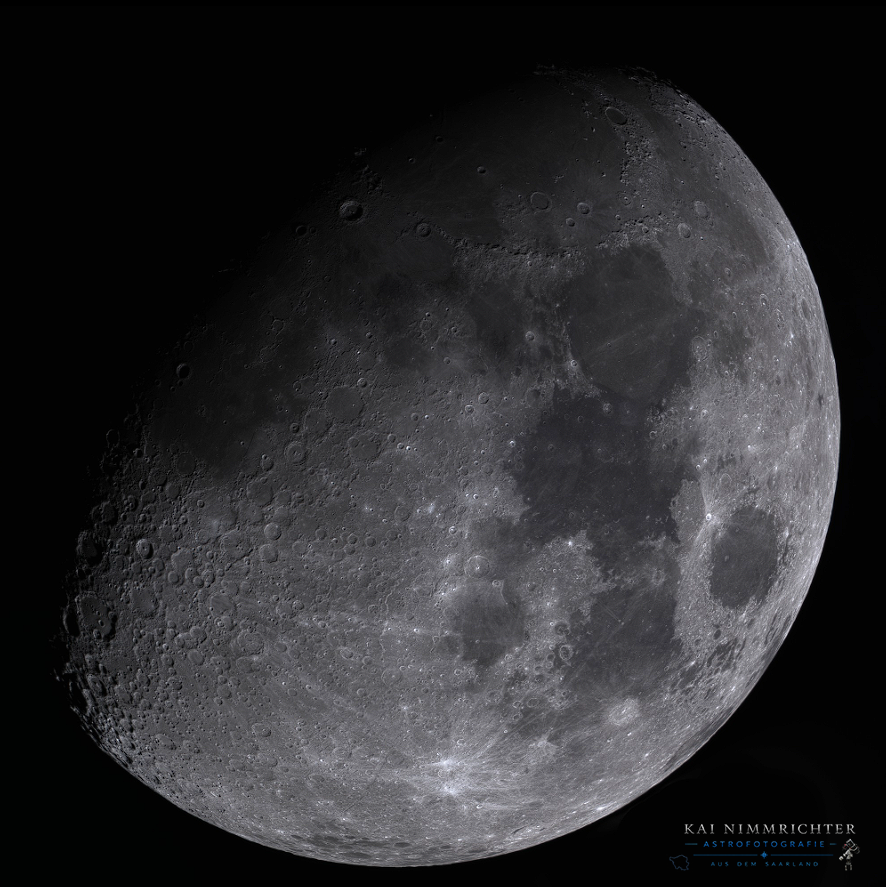
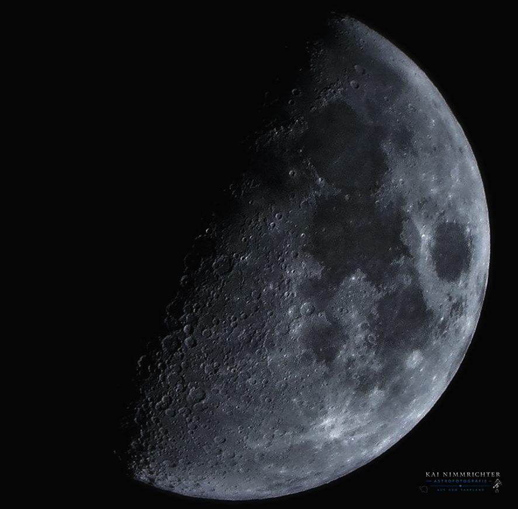
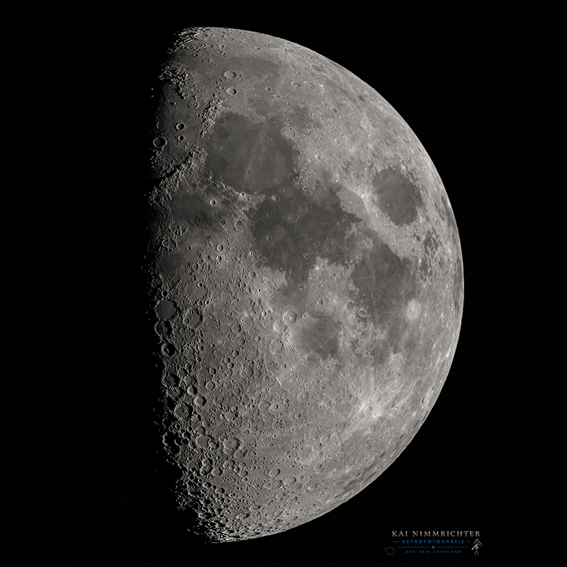

Mond
Mond: Der Mond ist unser nächster Nachbar im All und eines der faszinierendsten Beobachtungsobjekte am Nachthimmel. Seine Krater, Gebirge und Meere bieten selbst mit Amateur-Teleskopen beeindruckende Details.
🌙 Allgemeine Daten
ObjektMond (Erdtrabant)
UmkreisErde
Entfernungca. 384.400 km
Durchmesser3.474 km
Masse7,35 × 10²² kg
📈 Physikalische Daten
Helligkeitbis −12,7 mag (Vollmond)
Umlaufzeit27,3 Tage (siderisch)
Rotationgebunden (27,3 Tage)
Alterca. 4,53 Mrd. Jahre
Besonderheitzeigt der Erde immer dieselbe Seite


Detailaufnahme 01
Mond 03.2024

Mond 05.2024
Mond 01.2023